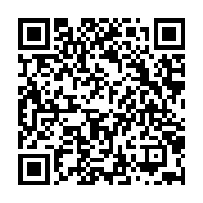
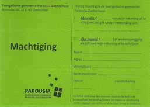

Draag je het werk van de Evangelische Gemeente CAMA Parousia Zoetermeer een warm hart toe, en wil je ons hierbij financieel ondersteunen? Dan kun je op zondagmorgen je gift tijdens de collecte voldoen.
Digitaal kun je bijdragen door de QR-code hieronder te scannen met je telefoon (foto-app) of door te klikken op deze link.

Maar je kunt natuurlijk ook je gift (eenmalig of structureel) overmaken naar onze bankrekening. Door onze ANBI-status kun je je digitale gift tevens aftrekken van de inkomstenbelasting.
IBAN:
NL69 INGB 0003 9470 66
Ten name van:
Evangelische Gemeente CAMA Parousia Zoetermeer
Fiscaal nummer:
807001296
Je kunt ons ook machtigen om eenmalig of periodiek een vast bedrag van jouwrekening te incasseren. Hiervoor kun je een machtiging ("het groene briefje") invullen, die je in de hal (bij binnenkomst rechts) bij de brievenbus aan de muur vindt. De ingevulde machtiging kun je vervolgens in diezelfde brievenbus deponeren.
